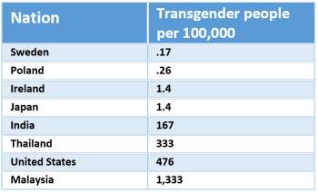
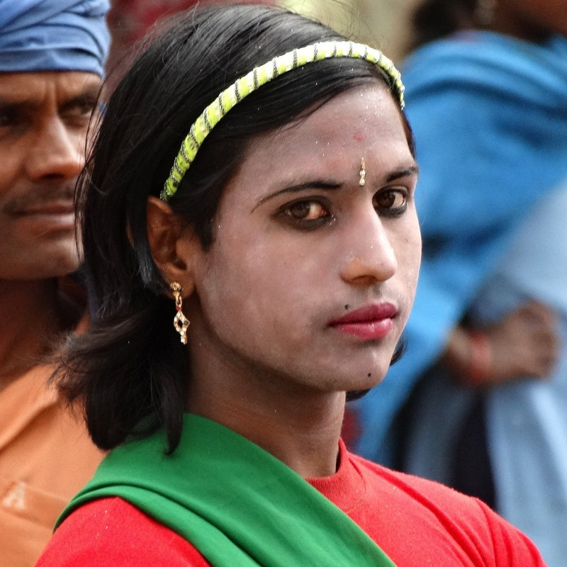
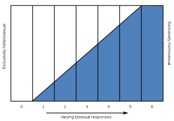
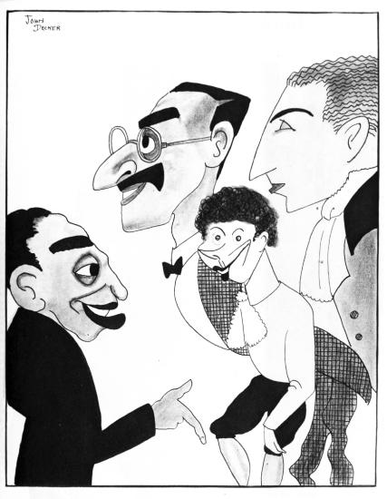

6.5: Sex, Gender, and Sexual Orientation
Sex, Gender, and Sexual Orientation: Three Different Aspects of You
Applying for a credit card or filling out a job application requires your name, address, and birth date. Applications also usually ask for your sex or gender. The terms “sex” and “gender” are commonly used interchangeably, but they have distinct meanings.
Sex refers to a set of biological attributes including reproductive/sexual anatomy, genetics, and hormones. Sex is usually categorized as male or female, although variations occur in the biological attributes that comprise sex. By contrast, the term gender describes psychological (gender identity) and sociological (gender role) representations of biological sex. Ideas about gender vary over time and across cultures. At an early age, we begin learning cultural norms for what is considered masculine and feminine. For example, children may associate long hair or dresses with femininity. As adults, we often conform to these norms by behaving in gender-specific ways (Marshall, 1989; Money et al., 1955; Weinraub et al., 1984).
Sex and gender are important aspects of a person’s identity. However, they do not inform us about a person’s sexual orientation (Rule & Ambady, 2008). Sexual orientation refers to a person’s sexual attraction to others.
The international scientific and medical communities (e.g., World Health Organization, World Medical Association, World Psychiatric Association, Association for Psychological Science) view variations of sex, gender, and sexual orientation as normal. Furthermore, variations of sex, gender, and sexual orientation occur naturally throughout the animal kingdom. More than 500 animal species display homosexual or bisexual behavior (Sommer & Vasey, 2006; Figure 12). Hermaphroditism—having both functional testes and ovaries and being able to produce both female and male gametes (i.e., viable eggs and sperm)—is a normal mode of reproduction in a wide range of animals (but is virtually nonexistent in humans). Intersex is characterized as having sexual characteristics that do not fall neatly into male and female categories (e.g., absence or combination of male and female reproductive organs, sex hormones, or sex chromosomes). Intersex occurs in both animals and humans (Hrabovszky & Hutson, 2002). In humans, estimates of the prevalence of intersex individuals vary widely: from 0.018% to 1.7% of the population depending on how it is defined (Blackless et al., 2000; Sax, 2002). Many conditions have been considered intersex, such as Androgen Insensitivity Syndrome and Turner’s Syndrome (Lee et al., 2006). The term “syndrome” can be misleading, as they otherwise lead relatively normal intellectual, personal, and social lives. In any case, intersex individuals demonstrate the diverse variations of biological sex.
Variations in Gender
Just as biological sex varies more widely than is commonly thought, so too does gender. Cisgender individuals’ gender identities correspond with their birth sexes, whereas transgender individuals’ gender identities do not correspond with their birth sexes. Because gender is so deeply ingrained culturally, rates of transgender individuals vary widely around the world (see Table 2). Some cultures formally recognize the presence of people who do not conform to an expectation that gender identity match biological sex (Figure 13).


Transgender rates and subtypes differ significantly between cultures and over time. Transgender women (TGW; whose birth sex was male and are sometimes called male-to-female or MTF individuals) were more common than transgender men (TGM; whose birth sex was female and are sometimes called female-to-male or FTM individuals) in 16 of 18 countries surveyed, and the TGW to TGM ratio was 3 to 1 (Meier & Labuski, 2013). However, this ratio is changing; in the U.S., the number of individuals seeking hormone therapy for TGW and TGM transitions is becoming more similar (Leinung & Joseph, 2020). This change could reflect greater acceptance, destigmatization, and decreasing barriers to care for TGM individuals.
Sex Hormones in Transgender Treatment. Feminizing or masculinizing hormone therapy is the administration of exogenous endocrine agents to induce changes in physical appearance. Transgender women are prescribed estrogen and anti-androgen medication. Transgender men are prescribed testosterone. Hormone therapy is inexpensive relative to surgery, and highly effective in the development of some secondary sex characteristics, such as facial and body hair in transgender men (i.e., female-to-male individuals) or breast development in transgender women (i.e., male-to-female individuals). Thus, hormone therapy is often the first (and sometimes only) medical gender-affirmation intervention accessed by transgender individuals looking to develop masculine or feminine characteristics consistent with their gender identity. In some cases, hormone therapy may be required before surgical interventions can be conducted. Emerging scientific research on gender-affirming hormone therapy has shown that sex hormone applications influence mood, behavior, and cognition, as well as brain structure and function in the adult human brain (Kranz et al., 2020; Nguyen et al., 2018; Nguyen et al., 2019). For example, gender-affirming hormone therapy tends to reduce symptoms of anxiety and depression and lower social distress (Nguyen et al., 2018). Transgender men undergoing testosterone therapy showed brain changes, including increased total brain and hypothalamic volumes and altered white-matter microstructure, aligning more closely with cisgender male patterns (Nguyen et al., 2019).
Societal Understanding of Gender Variations. Our understanding of gender identity continues to evolve, and young people today have more opportunity to explore and openly express gender than previous generations. The transgender community has gained visibility in American society—an estimated 0.6% of adults in the USA identified as transgender in 2016 (Meerwijk & Sevelius, 2017), and that population growth is driven by younger generations. A 2017 survey revealed that 1.8% of high school students identified as transgender and another 1.6% were questioning their gender (Johns et al., 2019; Scheim et al., 2022). Recent studies indicate that most Millennials (birth years 1981-1996) regard gender as a continuum instead of a strict male/female binary. As young people lead the changing views on gender, other changes are emerging in a range of spheres, from public bathroom policies to retail organizations. For example, some retailers are changing traditional gender-based marketing of products, such as removing “pink and blue” clothing and toy aisles. Despite these changes, those outside of traditional gender norms face difficult challenges. Even people who vary slightly from traditional norms can be the target of discrimination and even violence.
Sexual Orientation
A person’s sexual orientation is their sexual and emotional attraction to a particular sex or gender, including a continuing pattern of romantic or sexual attraction to persons of a given sex or gender. According to the American Psychological Association (APA) (2016), sexual orientation also refers to a person’s sense of identity based on those attractions, related behaviors, and membership in a community of others who share those attractions. Although a person’s intimate behavior may have sexual fluidity—changing due to circumstances (Diamond, 2008)—sexual orientations are relatively stable over one’s lifespan, and are influenced by genetics and other biological factors (Frankowski, 2004).
A Continuum of Sexual Orientation. Sexual orientation is as diverse as gender identity. Instead of thinking of sexual orientation as being two categories—homosexual and heterosexual—sexuality researcher Alfred Kinsey argued that it’s a continuum (Kinsey, Pomeroy, & Martin, 1948). He measured sexual orientation on a continuum, using a 7-point Likert scale called the Heterosexual-Homosexual Rating Scale, in which 0 is exclusively heterosexual, 3 is bisexual with equal attractions to the same and opposite sexes, and 6 is exclusively homosexual (Figure 14). Later researchers using this method have found 18% to 39% of Europeans and Americans identify as somewhere between heterosexual and homosexual (Lucas et al., 2017; YouGov.com, 2015). These percentages drop dramatically (0.5% to 1.9%) when researchers force individuals to respond using only two categories (Copen, Chandra, & Febo-Vazquez, 2016; Gates, 2011).

Development and Origins of Sexual Orientation
Individuals are usually, but not always, aware of their sexual orientation between middle childhood and early adolescence, and sexual activity is not necessary for this recognition. There is no scientific consensus regarding the root cause(s) of sexual orientation, but it is not a conscious “choice” for either heterosexual or non-heterosexual individuals. Research has examined many possible biological, developmental, social, and cultural influences on sexual orientation. Social factors (such as having homosexual parents, recruitment by homosexual adults, and experiencing disordered parenting) are generally not scientifically supported (Bailey et al., 2016). Nonsocial causes (such as genetics, prenatal hormone exposure, fraternal-birth order) have much more supporting evidence.
Genetics. One method of measuring the genetic roots of sexual orientation is concordance rates, which is the probability that a pair of individuals has the same sexual orientation. If both twins have the same sexual orientation, they are “concordant” for this trait. Concordance rates are compared between people who share the same genetics (monozygotic twins), some of the same genetics (dizygotic twins and siblings, 50%), and non-related people (randomly selected from the population). Concordance for sexual orientation is highest for monozygotic twins; and concordance rates for dizygotic twins, siblings, and randomly selected pairs are not significantly different (Bailey et al. 2016; Kendler et al., 2000). Since concordance rates (i.e. having the same sexual orientation) are higher for monozygotic twins, this indicates that “nature” (genetics) influences sexual orientation. However, monozygotic twins do not always have the same sexual orientation, so “nurture” (the environment and individual experiences) also plays a role in determining sexual orientation. Nonetheless, because sexual orientation is a debated issue, an appreciation of the genetic aspects of attraction is an important piece of this dialogue.
Prenatal Hormone Exposure. Adult hormone levels do not relate to sexual orientation. On average, gay and heterosexual men have similar levels of hormones, and lesbian and heterosexual women have similar levels of hormones. Sexual orientation is not affected by adult treatment with androgens or estrogens or adult gonadectomy (surgical removal of testes or ovaries resulting in loss of gonadal production of sex steroids) (Balthazart, 2011). However, hormone levels during early sensitive periods of brain development do impact sexual development and sexual orientation. In animal studies, experimentally manipulating prenatal exposure to sex hormones, including testosterone, impacts sexual physiology and behavior, such as mounting and same-sex partner preference (Balthazart, 2011). In humans, excess or deficient exposure to hormones during prenatal development has been linked to non-heterosexual orientation. Females exposed to abnormally high amounts of prenatal androgens due to congenital adrenal hyperplasia (CAH) are much more likely to identify as bisexual or lesbian (Cohen-Bendahan, van de Beek, & Berenbaum, 2005).
Fraternal-Birth-Order Effect. The “fraternal-birth-order effect” refers to the consistent cross-cultural finding that homosexual males tend to have more older brothers than heterosexual males (Bailey et al., 2016). “The effect is almost certainly causal, with each additional older brother causing an increase in the chance of a man being homosexual. … Assuming that a man without any older brothers has a 2% chance of being homosexual, a man with one older brother has a 2.6% chance; with two, three, and four older brothers, the chances are 3.5%, 4.6%, and 6.0%, respectively” (Bailey et al., 2016, page 79). This effect only occurs for biological brothers (Figure 15), meaning that the number of sons gestated by the mother is the important factor, whether or not the man was raised with those brothers. One proposed mechanism for this is that the mother creates antibodies against proteins on her developing son’s Y chromosome (a possibility which increases with each pregnancy of a son) and that those antibodies may alter the functioning of subsequent sons’ Y chromosomes (Bailey et al., 2016; O’Hanlan et al., 2018).

In Closing: Gender and Sexual Orientation
Sex, gender, and sexual orientation are distinct aspects of human identity. Sex refers to the biological characteristics of anatomy, genetics, and hormones, while gender describes psychological (gender identity) and sociological (gender role) representations of biological sex. Sexual orientation describes the pattern of emotional, romantic, and sexual attraction. All three of these concepts exist along continuums rather than binary categories. There is natural variation across individuals and cultures in how sex, gender, and sexual orientation manifest. Current scientific evidence indicates these traits have strong biological underpinnings, with factors like genetics, prenatal hormone exposure, and fraternal birth order influencing their development, often before birth (O’Hanlan et al., 2018). Though historically stigmatized, modern perspectives increasingly recognize gender and sexual diversity as normal variations. Moving forward, reducing discrimination and achieving greater equality and acceptance for people across the full spectrums of sex, gender, and sexual orientation remain important goals.
Text Attributions
Parts of this section adapted from:
Bahm, N. (2024). 13.4: Gender. In Biopsychology (ASCCC Open Education Resources Initiatives (OERI). Retrieved from https://socialsci.libretexts.org/Bookshelves/Psychology/Biological_Psychology/Biopsychology_(OERI)_-_DRAFT_for_Review/13%3A_Sexuality_and_Sexual_Development/13.04%3A_Gender
Bahm, N. (2024). 13.5: Sexual Orientation. In Biopsychology (ASCCC Open Education Resources Initiatives (OERI). Retrieved from https://socialsci.libretexts.org/Bookshelves/Psychology/Biological_Psychology/Biopsychology_(OERI)_-_DRAFT_for_Review/13%3A_Sexuality_and_Sexual_Development/13.05%3A_Sexual_Orientation
Lucas, D. & Fox, J. (2024). The psychology of human sexuality. In R. Biswas-Diener & E. Diener (Eds), Noba textbook series: Psychology. Champaign, IL: DEF publishers. Retrieved from http://noba.to/9gsqhd6v
Media Attributions
- Couple of two male mallard ducks © Norbert Nagel is licensed under a CC BY-SA (Attribution ShareAlike) license
- Table2 – Transgender rates by country © noba is licensed under a CC BY-NC-SA (Attribution NonCommercial ShareAlike) license
- Hjira dancer © Adam Jones is licensed under a CC BY (Attribution) license
- Pattaya transwomen 2 © Ohconfucius is licensed under a Public Domain license
- Lesbian couple Sacramento-snipped © Bev Sykes is licensed under a CC BY (Attribution) license
- 05.TwoMen.Midtown.BaltimoreMD.27May2019 © Elvert Barnes is licensed under a CC BY-SA (Attribution ShareAlike) license
- Kinsey’s scale © Kinsey is licensed under a Public Domain license
- The Four Marx Brothers © John Decker is licensed under a Public Domain license


A biological descriptor based on reproductive, hormonal, anatomical, and genetic characteristics. Typical sex categories include male, female, and intersex.
The psychological and sociological representations of one’s biological sex.
Personal depictions of masculinity and femininity.
Societal expectations of masculinity and femininity.
A person’s sexual attraction to other people.
Born with either an absence or some combination of male and female reproductive organs, sex hormones, or sex chromosomes.
A transgender person whose birth sex was male.
A transgender person whose birth sex was female.
Personal sexual attributes changing due to psychosocial circumstances.
Opposite-sex attraction.
Attraction to two sexes.
Same-sex attraction.
Twins conceived from a single ovum and a single sperm, therefore genetically identical.
Twins conceived from two ova and two sperm.